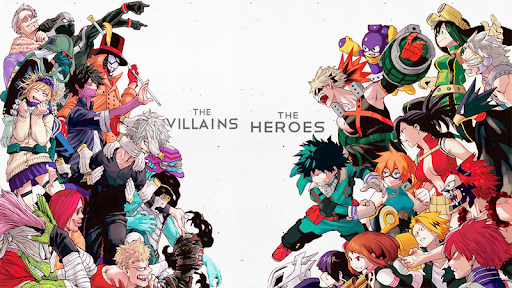

나의 히어로 아카데미아 4기 오프닝
palaris

동영상링크
あの日 守ると決めた
約束はこの胸に
全てを失うことで
今、救える命があるのなら
喜んで全部をあげよう
この気持ちが初めての生き甲斐だ
傷跡はかくさないで
絶望も武器にして
生きると決めたんだよ
精一杯この涙かきわけて
君に全てをあげるから
お願いどうか消えないでくれ
あの日 守ると決めた
約束はこの胸に
誰かの懸けた命に
今、生かされながら戦っている
負けることはもう怖くない
勝ちを諦めるのが嫌なんだ
もう絶対逃げたりはしないから
なりたい自分(ぼく)で挑みたいだけ
しょうもない綺麗事だとしても
君が笑ってくれりゃいいんだ
「強さ」は何かの上に立つため
在るんじゃない
大切なものを抱きしめるそのために
何もかもを失くしても
きっと 君を忘れない
精一杯この涙かきわけて
君に全てをあげるから
お願いどうか消えないでくれ
あの日 守ると決めた
約束はこの胸に
消えそうな希望(光)だとしても行け！
ピースサイン並に神曲ですよね…
ボーカルの方の青年っぽい見た目からは意外な力強く繊細な歌声がギャップでめちゃすきです。